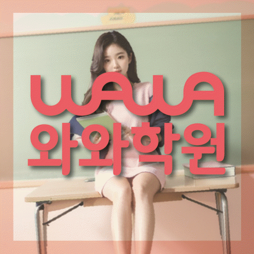

국어 수업 가능 학년
상담 시 가능 학년 확인
ACADEMIC SUPPORT LOCAL GUIDE
동소문동 보습학원 선택 전 확인할 학생 유형, 현재 학년 학습 상태, 수업학교 자료 활용법, 학원소식 질문, 주소 기준 등하원 계획을 안내합니다.
30초 핵심 안내
동소문동 보습학원을 알아보는 상황이라면, 답은 단순히 문제를 많이 푸는 수업을 고르는 데 있지 않습니다. 예제는 따라 풀 수 있지만 복습 간격이 불규칙한 학생에게 필요한 것은 현재 학년 자료를 바탕으로 원인을 나눈 뒤 짧은 복습을 고정 요일에 반복하고 확인 문제로 기억 상태를 점검하는 루틴을 수업마다 일관되게 적용하는 구조입니다. 또한 학원소식의 조건과 서울 성북구 아리랑로7길 5 4층 와와학습코칭학원까지 함께 확인해야 수업 내용과 생활 동선이 모두 맞는 선택이 됩니다.
동소문동은 수업 가능 생활권 기준입니다. 실제 방문 센터는 와와학습코칭센터 동소문점이며, 주소와 등록 정보는 아래 센터 기준 정보에서 확인할 수 있습니다.
상담 시 가능 학년 확인
초3 · 초4 · 초5 · 초6 · 중1 · 중2 · 중3 · 고1 · 고2
초3 · 초4 · 초5 · 초6 · 중1 · 중2 · 중3 · 고1 · 고2



할머니문방구 사거리 건물 4층
센터 기준 정보
센터명·주소·등록 정보와 교습비 확인 경로를 상담 전에 살펴볼 수 있도록 정리했습니다.
서울 성북구 동소문동 상담 기준
서울 성북구 아리랑로7길 5 4층 와와학습코칭학원
성북강북교육지원청 등록 제2017-39호
실제 수업 가능 시간은 학년·과목별 일정에 따라 상담에서 확인합니다.
동네명은 수업 가능 지역을 찾기 위한 안내 기준입니다.
정덕초 · 우촌초 · 정수초
성신여중 · 동구여중 · 삼선중 · 고명중
성신여고 · 홍대부고 · 고대부고 · 한성여고
센터명·주소·등록번호·가능 학년·학교 참고 정보는 제공된 센터 자료를 기준으로 정리했으며, 실제 수업 범위와 일정은 상담에서 다시 확인합니다.
지역별 학습 안내
학생의 과목별 학습 상황과 상담 전에 확인할 기준을 여섯 가지 주제로 나누어 정리했습니다.
선행, 복습, 시험 준비를 모두 많이 하는 것이 서울 성북구 동소문동 학생에게 항상 좋은 계획은 아닙니다. 동소문동에서 복습 주기가 흔들리는 학생은 먼저 짧은 복습을 고정 요일에 반복하고 확인 문제로 기억 상태를 점검하는 루틴을 통해 현재 학년의 필수 내용을 안정시킨 뒤 다음 단계를 정하는 편이 현실적입니다. 동소문동 주간 계획은 학교 진도 대응, 누적 빈틈 보완, 평가 대비를 다른 색이나 칸으로 구분해 어느 목적의 공부인지 보이게 해야 합니다. 서울 성북구 동소문동에서는 시험이 가까워져 범위 학습이 늘더라도 이전 오답을 완전히 버리지 않고 짧은 확인을 유지하는 것이 좋습니다.
이번 동소문동 페이지에서 설정한 학생은 예제는 따라 풀 수 있지만 복습 간격이 불규칙한 학생입니다. 동소문동 진단에서는 겉으로 보이는 점수만으로 원인이 드러나지 않으므로 최근 교재에서 멈춘 지점, 혼자 풀 때의 첫 시도, 과제 후 재확인 여부를 따로 살펴야 합니다. 동소문동에서 이 유형을 지도할 때는 짧은 복습을 고정 요일에 반복하고 확인 문제로 기억 상태를 점검하는 루틴을 먼저 적용하는 편이 좋습니다. 서울 성북구 동소문동 학생은 현재 학년의 진도를 무조건 앞당기거나 문제 수를 갑자기 늘리면 약점이 가려질 수 있으므로 설명 이해와 독립 풀이를 분리해 관찰해야 합니다.
“학원소식”은 메시지를 자주 보내는가보다 어떤 정보를 언제 전달하는가가 더 중요합니다. 동소문동에서 학원소식 조건을 기록할 때는 출결, 과제 미완료, 오답 반복, 일정 변경, 상담 필요 사항을 구분해 전달하는지와 보호자가 답해야 하는 항목이 무엇인지 확인하십시오. 동소문동 학부모에게는 알림의 양보다 학생의 현재 상태와 다음 행동이 한눈에 보이는 정리가 실용적입니다. 개인정보가 포함될 수 있으므로 수신 대상과 보관 방식도 함께 묻고, 학원소식이 수업 자체를 대신하지 않고 학습 관리에 연결되는지 살펴보아야 합니다.
제공 자료에서 동소문동 수업학교로 정덕초, 우촌초 등이 안내되어 있습니다. 동소문동 보호자는 학교 이름보다 학생이 최근에 받은 시험 안내와 수업 자료를 먼저 확인해야 합니다. 서울 성북구 동소문동의 현재 학년 진도, 수행 과제, 이전 시험 오답과 남은 기간을 한 표에 넣으면 학교 대비와 누적 복습의 비중을 조정하기 쉽습니다. 동소문동 확인 가능한 학교 정보만 사용했으며 다른 학교의 수업 여부는 상담 과정에서 점검하도록 안내합니다.
동소문동 보습학원 최근 평가 기록, 현재 교재, 학교 일정과 가능한 등원 시간을 미리 적어 두어야 상담 답변을 비교하기 쉬워집니다. 서울 성북구 동소문동 학부모가 비교할 때는 첫째 진단 방식, 둘째 수업 인원과 개별 확인 범위, 셋째 과제·오답 처리, 넷째 결석 보강, 다섯째 피드백 주기, 여섯째 비용·변경·환불 기준을 같은 순서로 묻는 것이 좋습니다. 학원소식 설명은 구두 약속으로 끝내지 말고 적용 대상, 시작 시점, 예외 상황과 확인 방법을 기록해 두십시오. 동소문동에서 첫 주 계획을 확인할 때는 상담 당일 성적 상승 폭이나 입시 결과를 단정하는 표현보다 현재 자료를 근거로 조정 가능한 계획을 제시하는지를 선택 기준으로 삼으십시오.
동소문동 보습학원의 관리가 구체적인지는 수업 전·중·후의 연결로 판단할 수 있습니다. 동소문동 학생이 시작 문제로 준비도를 확인하고, 설명 뒤 유사 문제를 독립적으로 풀고, 틀린 이유를 분류한 뒤 며칠 후 다시 확인하는지가 핵심입니다. 예제는 따라 풀 수 있지만 복습 간격이 불규칙한 학생에게는 짧은 복습을 고정 요일에 반복하고 확인 문제로 기억 상태를 점검하는 루틴을 한 번의 조언이 아니라 반복 가능한 절차로 만들어야 합니다. 동소문동 과제는 페이지 수뿐 아니라 예상 시간과 필수·보완 구분이 있어야 학생도 우선순위를 선택할 수 있습니다.
FAQ
동소문동 보습학원 상담에서는 항목 이름보다 실제 적용 방식을 확인하고 누가 언제 무엇을 확인하고 기록하는지까지 물어보아야 합니다. 동소문동 상담에서는 알림 횟수보다 출결, 과제, 오답, 일정 변경과 다음 행동이 구분되어 전달되는지, 개인정보 수신 범위가 적절한지 보십시오.
같은 학교나 학년이라도 평가 자료가 달라질 수 있어 목록 밖 학교는 교재와 학년을 전달해 수업 가능 여부를 확인해야 합니다. 학생의 현재 상태와 평가 난도, 확보한 학습 시간이 모두 달라 동소문동 상담에서 향상 폭을 사전에 보장하기는 어렵습니다. 동소문동 학생은 정해진 복습일을 지키고 확인 문제를 푸는 지속성 같은 과정 지표와 학교 평가를 함께 추적하며 계획을 조정하는 설명이 더 현실적입니다.
동소문동 학생의 출발점을 구체화할 때에는 최근 시험지와 교재, 과제 기록을 같은 기준으로 대조해야 합니다. 예제는 따라 풀 수 있지만 복습 간격이 불규칙한 학생이라면 현재 학년 과정의 미완성 부분을 나누어 보고 짧은 복습을 고정 요일에 반복하고 확인 문제로 기억 상태를 점검하는 루틴을 실제 수업과 과제에 연결하는지를 우선 확인하는 편이 좋습니다.
실제 이동 부담을 계산할 때에는 출발·수업 종료·귀가 시각을 요일별로 계산해야 합니다. 동소문동 페이지에 제공된 주소는 서울 성북구 아리랑로7길 5 4층 와와학습코칭학원입니다. 제공 주소를 검토할 때는 동소문동 학생의 출발 지점과 늦은 요일, 수업 종료 뒤 귀가 시간을 따로 계산하고 편의 서비스는 센터에 직접 확인하는 편이 정확합니다.
공통 개념과 학교별 범위를 구분하려면 학생이 가져온 최근 시험지와 과제 공지를 먼저 대조해야 합니다. 동소문동 페이지에 제공된 학교 정보는 정덕초, 우촌초입니다. 동소문동에서는 학교 이름만으로 진도와 일정을 예상하지 말고 학생의 실제 범위표·교재를 기준으로 계획을 조정하며, 목록에 없는 학교는 수업 가능 여부를 따로 확인해야 합니다.
상담 상황 예시
동소문동 상담 전에 재학 학교 자료와 최근 오답을 함께 준비하라는 안내가 도움이 됐습니다. 아직 결과를 단정할 수는 없지만, 동소문동에서 학원소식과 과제·피드백 기준을 같은 질문으로 비교하니 무엇을 확인해야 하는지가 명확했습니다.
동소문동에서 여러 보습학원을 비교하면서 교재명만 들었을 때보다 수업 전 진단, 혼자 풀이, 오답 재확인 순서를 들었을 때 차이를 알기 쉬웠습니다. 동소문동에서 아이에게는 짧은 복습을 고정 요일에 반복하고 확인 문제로 기억 상태를 점검하는 루틴이 필요하다는 설명을 듣고, 집에서는 과도하게 개입하기보다 실행 여부만 확인할 수 있었습니다.
서울 성북구 동소문동에서 학원을 비교하는 상황을 가정한 예시 후기입니다. 이 문안은 동소문동 관련 예시이며 실제 수강생의 성적이나 입시 결과를 주장하지 않습니다.